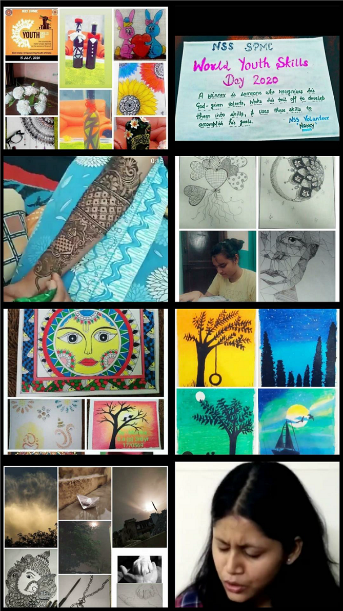

National Service Scheme: Qurantine Report
Year : 2019-20

Contents : Quarantine Report
- Innovation in Quarantine
- Sewa Bharti Helpline
- Aarogya Setu App
- Slogan Making Competition
- Awareness Videos for Covid-19
- Student Collages for Covid-19
- Future Plans for Quarantine
- Vision, Mission and Objectives
INNOVATION IN QUARANTINE:
Date – 9th April 2020
The NSS Unit of Shyama Prasad Mukherjee College organized an online poster making competition for the students. The aim of this activity was to make people aware about COVID-19, and utilize their free time of quarantine in doing some creative work.
They could give handmade posters as well as digitally prepared ones. The best posters were uploaded on the official pages of NSS unit of SPM. Students participated in this activity with great enthusiasm and gave their best to send message regarding COVID-19 to the general public.
SEWA BHARTI HELPLINE:
Date – 11th April 2020 To Present
Volunteers of Shyama Prasad Mukherjee College are a part of the Sewa Bharti Helpline. This helpline helps people who are stuck in lockdown by providing them food, medicine and other related services. Our college students under the guidance of NSS Convenor Prof. Rajkumar Falwaria and student coordinator Kiran Sharma have stepped up to volunteer in this helpline and serve by attending calls on this helpline number.
Volunteers have been given time slots of 4-5 hours every day in which they have to attend the forwarded calls from all over India. They have been given an app in which they have to fill the details of the persons along with the requirements of the person like - Ration assistance or Medical assistance or so. Later on these people are helped by the team of Sewa Bharti. Volunteers attend the non-stop calls and answer them patiently as needed.
AAROGYA SETU APP:
Date – 14th April 2020
The NSS Unit of Shyama Prasad Mukherjee College urged everyone to download and install Aarogya Setu App. Aarogya Setu App which is designed to keep a user informed in case she/he has crossed paths with someone who has tested COVID-19 positive. Under the guidance of our Convenor Prof. Rajkumar Falwaria, we started this campaign.
The NSS Unit of our college motivated and requested everyone to download this app and described the usage of this app which can help them and their family. We asked them to send us the screenshot of the app which we posted on our instagram page to motivate others also. More than 600 students downloaded the app and sent us the screenshots.
Prof. Rajkumar Falwaria, also made a video for motivating students to download the Aarogya Setu App. A collage was made of the screenshots sent to us by the students who downloaded the app, and posted on our Instagram page.
SLOGAN MAKING:
Date – 14th April 2020
The NSS Unit of Shyama Prasad Mukherjee College organized a Slogan Making Competition in collaboration with Bhagidari Jan Sahyog Samiti for all the students of the college. Topic for the competition was “Prevention of Corona Virus”. It was organized in both English and Hindi medium.
The competition was organized to boost the creativity and imagination of students while in quarantine. The slogans created by the students would further motivate people to stay active and strong in the face of this pandemic (COVID-19). Approximately 100 students had participated in it. It was one of the innovative ways for students to utilize their quarantine.
AWARENESS VIDEOS FOR COVID-19:
Date – 16th April 2020
NSS SPM Unit has always shown its presence in the time of social difficulties and left no stone unturned to give its contribution in social work. Even in the time of this global pandemic when everyone is at their home, we didn't put our social activities on hold, and requested our volunteers to contribute by being at their home.
On 5th April, we requested our volunteers to make awareness videos regarding the Corona Virus talking about its spread, symptoms and preventive measures. The volunteers in their videos spread awareness by an appeal to follow instructions of our government and WHO, support the lockdown, care for our frontline health workers, co-operate the authorities and policemen, practice social distancing, ignoring rumors etc.
We were overwhelmed to see their immense participation in the same. Our volunteers have shown their creativity through these awareness videos and tried their best to aware people regarding the corona outbreak. We have uploaded a few videos on our Instagram account as it is one of the social media platforms to spread awareness.
STUDENT COLLAGES FOR COVID-19:
Date – 17th April 2020
After witnessing the death toll and an increase in the corona virus cases worldwide, the NSS Unit of Shyama Prasad Mukherjee College urged its volunteers to utilise their time in a productive manner by making posters and motivating people to take all the necessary precautions at every place as it’s one point to prevent oneself from this pandemic disease (COVID 19).
Under the guidance of our Convenor Prof. Rajkumar Falwaria, we requested volunteers to send their photos while holding a sheet of paper with a message on it and show that our small step could help people to actually know how to take prevention and be safe.
The initiative was taken to encourage everyone, to understand the seriousness of this disease and keep themselves as well as others safe. A collage was made and posted of the photos on the Unit’s Instagram page.
YOGA DAY CELEBRATION:
Date – 21st June 2020
The NSS Unit of Shyama Prasad Mukherjee College celebrated International Yoga Day. The aim of this activity was to make people aware about the benefits of doing yoga on daily basis and utilize their time of quarantine by performing a healthy routine.
With our changing lifestyles owing to the corona virus pandemic, yoga has benefits that are far reaching. NSS volunteers made aware students about the benefits of yoga and uploaded students’ pictures of doing yoga at their home. Yoga specialists are upholding recuperating and elective treatment as extraordinary choices to handle this pandemic circumstances. Yoga could be assumed as a ground-breaking job in the battle against the novel coronavirus while improving the physical and mental prosperity of people. Students participated in this activity with great enthusiasm and gave their best to send message regarding importance of yoga specially during COVID-19 to the general public.
Awareness Regarding Global Population Issues:
Date : 11th– 12th July 2020
The NSS unit of SHYAMA PRASAD MUKHERJI COLLEGE FOR WOMEN celebrated World population day on 11th July 2020. This was celebrated as a part of awareness campaign to infuse the importance of population control among the youth in the present scenario. NSS SPMC work forward to spread awareness among every individual that to bring our territory into harmony we must have a check on the number of the population. Population trends and dynamics can have an enormous effect on prospects for poverty reduction and sustainable development. Poverty is influenced by – and influences – population dynamics, including population growth, age structure, and rural-urban distribution.
All of this has a critical impact on a country’s development prospects and prospects for raising the living standards of the poor. College NSS team organized a campaign to spread awareness by asking submission of articles, poems, essays, short composition etc. As a part of this awareness campaign many volunteers took part in it and submitted their entries. Organizing this type of events by the college NSS Team not only spreads a message to the society but also create leaders with broad perspective who works as a rational being to serve the society always.
NATIONAL PAPER BAG DAY CELEBRATION:
Date : 12th July 2020
Use and Reuse Paper Bags and contribute your bit to the environment. With the use of paper bags, we welcome a safer tomorrow. "SAY NO TO PLASTIC" with this message NSS UNIT of SHYAMA PRASAD MUKHERJI COLLEGE FOR WOMEN celebrated National Paper Bag day on 12th July 2020. As a part of NSS Activity, SPMC asked their volunteer to take a pledge regarding use and reuse of paper bags and make our mother Earth plastic free.
All the volunteers participated in this programme successfully as a token of love and care towards our environment. Not only are they biodegradable, they can withstand a lot of pressure. They are also easy to handle. Paper bags are almost 100% recyclable and can decompose within just a month. A paper bag can hold around 10-14 items and are quite sturdy. It takes less energy to manufacture paper bags as compared to plastic bags.
Paper bags are safer for pets, other animals. Paper bags can be reused at home and can even be used to make compost. So with all the concern towards environment NSS SPMC helps in making the planet healthier and opt for the environment friendly option of paper bags instead of plastic.
TREE PLANTATION DRIVE:
Date : 14th - 20nd July 2020
The NSS Unit of SHYAMA PRASAD MUKHERJI COLLEGE organized a tree plantation drive from 14th-20th July. Coronavirus has pushed everyone within the four walls of their houses because of which conducting any activity outside our homes will always be a second thought. But the NSS unit of SPM college infused digitalized way to conduct any drive such as" Tree plantation week". This tree plantation drive was organized for a week in which all the volunteers has to plant a sapling in their homes, All the students across various departments enthusiastically participated in this plantation drive and made it a huge success with their delightful responses.
In this drive everyone was required to send their pictures planting a sapling which was uploaded on the social media platforms to encourage others for participation and a step towards coming close to the nature. Tree plantation is not just something that should be done; instead, it is a necessity, the urgent need of the hour. Approximately 12 students including NSS volunteers participated in the drive with great enthusiasm. Some of them also taught how to plant a tree through videos. Planting of trees is especially important to protect our environment against air pollution and global warming. To this end, our young volunteers have been actively involved in organizing tree plantation campaigns.
WORLD YOUTH SKILLS DAY CELEBRATION:
Date : 15th-16th July 2020
The NSS UNIT of SHYAMA PRASAD MUKHERJI COLLEGE FOR WOMEN celebrated YOUTH SKILLS DAY on 15th July 2020. This day is marked as a day to pamper all the youth skills and let them grow in all the dimensions of life. On this youth skills day SPMC volunteers, made sure that every young mind can showcase their skills with the best of their ability and for that an online program was organized to ask the NSS Volunteers to show their skills by sending pictures. All the entries were featured on the social media platforms to encourage our young minds so that they can excel much more in their skills. Young people make up around one-quarter of the global workforce.
Like every generation before them, the current cohort of global youth will be concerned with finding employment. But they face an uncertain and changing landscape. from time immemorial, life was divided into two complementary parts: a period of learning followed by a period of working. In the first part of life you accumulated information, developed skills, constructed a world view, and built a stable identity.
In the second part of life, you relied on your accumulated skills to navigate the world, earn a living, and contribute to society. To contribute a little effort towards our society NSS UNIT of SPM COLLEGE work together to prosper the youth with skills, management, techniques and new learnings.
SLOGAN WRITING COMPETITION:
Date : 16th-18th July 2020
The NSS UNIT of SHYAMA PRASAD MUKHERJI COLLEGE FOR WOMEN organized an online inter collage slogan writing competition from 16th July-18th July. This competition saw huge responses from the students of different college.
This programme was organized under the supervision of:
- Prof. Rajkumar (Prog. Officer)
- Mansi (President)
- Ayushi (Vice President)
All entries were supposed to be submitted online to Shivani Gupta (Joint Secretary) and Kavya (Student’s Head).
The winners of this competition were:
- Komal Khatri, SPMC
- Mobani Biswas, SSKGDC
- Khaniya Kumar, Motilal Nehru College
SPMC congratulated all the winners for getting to the top in this slogan writing competition whereas all the best entries of other students were also posted on the social media platforms. This competition turned to be a huge success.
WASTE SEGREGATION CAMPAIGN:
Date : 22nd - 26th July 2020
“Waste segregation is the mother program because the idea of waste segregation is not just waste segregation per se. The idea behind this is to really minimize or reduce the volume of garbage. We are dumping at our landfills but then at the same time, we still want people to learn how to manage their own garbage. “
'This is rightly quoted by Frederika Rentoy'
The NSS UNIT of SHYAMA PRASAD MUKHERJI COLLEGE FOR WOMEN organized a WASTE MANAGEMENT PROGRAM from 22nd -26th July. As a part of awareness campaign regarding how important waste segregation is, NSS UNIT of SPMC took the responsibility to reduce and manage waste and its volunteers actively educated people about waste disposal techniques and also ensuring waste segregation. All the volunteers participated in this programme to turn this into a huge outcome.
The first step towards waste management is segregating the waste into dry waste and wet waste and for this Google form was also filled up by every NSS volunteers which contain a questionnaire about the waste segregating techniques at their houses and locality. Volunteers also made posters, videos and shared their own idea about waste segregation. Since cleanliness has become a movement like never before, this is the right time to address the bigger challenges – infrastructure, municipal capacity, corruption and social engineering in waste management. PRIORITIES SHOULD BE STRAIGHT – SEGREGATE, COLLECT AND TREAT.
KARGIL VIJAY DIWAS/POETRY COMPETITION:
Date : 26TH July 2020
'I WILL SUREL RETURN BACK. EITHER I WILL RETURN BACK WRAPPED IN THE NATIONAL FLAG BRAVELY FIGHTING FOR THE NATION OR I WILL RETURN BACK WITH THE INDIAN FLAG HELDING HIGH WITH A VICTORY. BUT I WILL RETURN.' -CAPTAIN VIKRAM BATRA
The NSS UNIT of SHYAMA PRASAD MUKHERJI COLLEGE FOR WOMEN celebrated KARGIL VIJAY DIWAS on 26th July 2020. This occasion is marked as one of the most important dates in Indian history since the year 1999. Nobody knew that this day will be marked as the day of victory of Indian army where at the same time the nation suffered the loss of 527 great soldiers who lost their lives while fighting this battle to protect their mother earth. To celebrate this sense of pride within the heart of every Indian NSS SPM UNIT organized online social media poetry competition for all the students to show their pride for the Indian Army This competition was organized under the supervision of following heads:
- Prof. Rajkumar (Prog. Officer)
- Mansi (President)
- Ayushi (Vice President)
All entries submitted online to Feroza (General Secretary) and Pragya (Student’s Head). Winners of this competition were:
- GUNJAN, SPMC - 1ST POSITION
- VEERU PAL, DIET - 2ND POSITION
- POOJA DEVI, SPMC - 3RD POSITION

LIVE OPEN MIC COMPETITION:
Date : 28TH JULY 2020
The NSS UNIT of SHYAMAPRASAD MUKHERJI COLLAGE FOR WOMEN organized a LIVE OPEN MIC COMPETITION on 28th July on the topic of ATMA NIRBHAR BHARAT. The competition witnessed huge responses from the students and there were about 47 students who registered to this competition. This competition was organized under the supervision of Kavya Garg (Student Head) and Kanak Tanwar (General secretary). All the registrations were done through google forms and this open mic competition was held on google meet platform.
Winners of this competition were:
- POOJA DEVI - 1ST POSITION
- VIBHAVESH MISHRA - 2ND POSITION
- KIRTI AGGARWAL- 3RD POSITION
This programme build confidence and presentation skills and allows every student to learn the experience of presenting their views before the world.